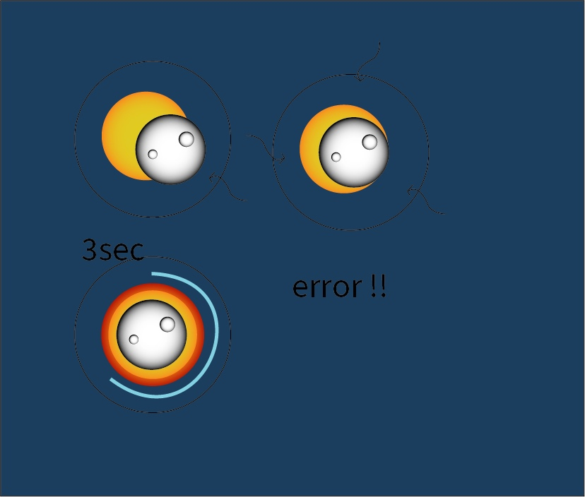
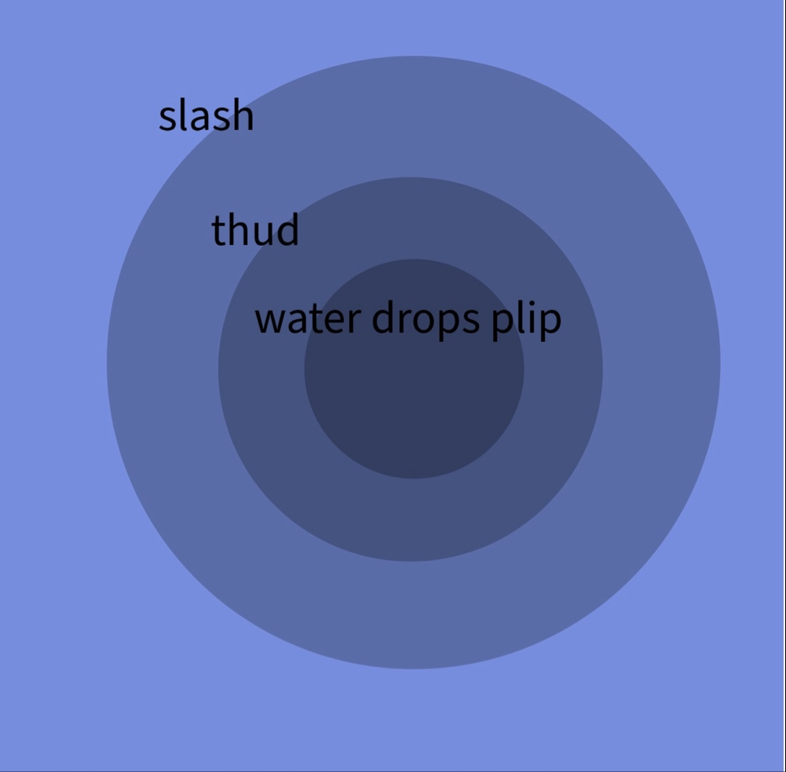
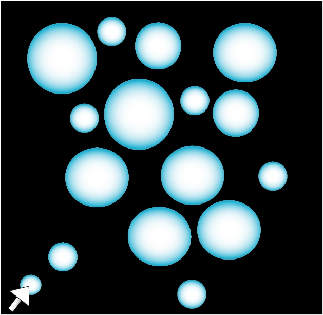

Issue / behavior / system: This aligns with celestial synchronization and the extreme rarity of perfect physical alignment.
Interaction Rule: The user manually drags the "moon" along a constrained circular orbit to align it over the sun. The sun drifts at an inconsistent, wobbly speed, forcing constant correction.
Friction & Unevenness: A magnetic "repulsion" effect pushes the circles apart when they get close. If totality is held for 3 seconds, a corona flare-up occurs, triggering a system reset.
Intended Feeling: Awe mixed with frustration.

Issue / behavior / system: This models physical wave propagation and audio decay over distance.
Interaction Rule: Clicking a grid square creates a "water drop" that triggers an initial "plip" sound.
Friction & Unevenness: Ripples expand outward automatically. As they move, the sound transforms into a "thud" and then a "slash." Unevenness occurs when overlapping ripples create destructive interference, silencing the song.
Intended Feeling: Calm, rhythmic experimentation followed by sensory overload.

Issue / behavior / system: This models spatial saturation and the loss of agency in a crowded environment.
Interaction Rule: The user navigates a cursor through open "Quiet Zones." Over time, "Noise Circles" generate and expand randomly.
Friction & Unevenness: The circles act as solid colliders that block movement. As density increases, the user is forced into jagged, restricted movements until they are trapped against the screen edge.
Intended Feeling: Increasing anxiety and claustrophobia.
